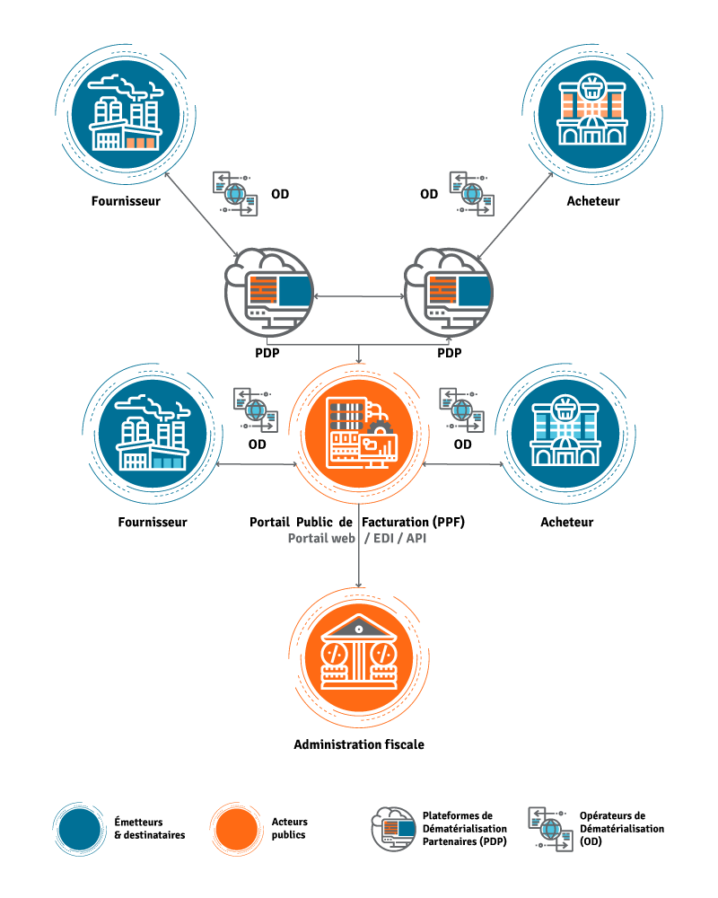

Facturation électronique : contrainte ou opportunité ?
La réforme impose l’échange de factures structurées via PPF / PDP / OD, pour fiabiliser la TVA et automatiser les flux. Réception obligatoire le 01/09/2026 ; émission généralisée le 01/09/2027. Ici : obligations, process clair, calendrier, ce qu’il faut faire maintenant — et comment votre expert-comptable vous accompagne.
Calendrier de la réforme
Les échéances clés pour organiser votre feuille de route.
Être capable de recevoir des e-factures via PPF, PDP ou OD. Action : choisir un canal et le tester avec 2–3 fournisseurs.
Émettre en format structuré : paramétrer la PDP/OD, vérifier les mentions obligatoires et l’e-reporting.
Généralisation de l’émission. Action : finaliser les procédures, former l’équipe, sécuriser l’archivage probant.
Comment circulent les e-factures
Process complet : Vendeur → PDP/OD → PPF → PDP/OD → Acheteur, avec transmission à l’Administration (e-reporting). L’expert-comptable suit le cadrage, la TVA, l’intégration comptable et l’archivage.

Le rôle de l’expert-comptable
Au-delà de l’outil, nous sécurisons vos flux et votre cash. Notre accompagnement comprend :
Feuille de route & gouvernance
Diagnostic initial, vagues (réception → émission → optimisation), jalons & indicateurs (statuts, rejets, DSO).
Choix PDP / OD / PPF
Benchmark, POC, paramétrage annuaire/routage, intégrations ERP/Compta, Factur-X/UBL.
Conformité & e-reporting
Règles de taux/territorialité, contrôles automatiques, fiabilisation des données transmises.
Qualité & contrôles
Émission/réception, rapprochements, rejets/litiges, procédures écrites.
Archivage probant
Conservation légale, intégrité/horodatage, sauvegardes & test de restauration, PCA.
Pilotage & relances
Relances, tableaux de bord (DSO, retards), coordination ADV/Commerce.
Diagnostic interactif : êtes-vous prêt ?
Cochez simplement les réponses. Le radar montre les risques ; nous affichons un score avec smiley, vos points forts/faibles et les actions prioritaires.
FAQ – questions fréquentes
La facturation électronique, concrètement ?
Émission, transmission et réception de factures structurées (Factur-X/UBL/CII) via des plateformes reliées au PPF. Le PDF simple par e-mail ne suffit plus pour l’émission.
Différence e-invoicing / e-reporting ?
e-invoicing : B2B domestique (factures structurées). e-reporting : transmission de données (B2C, export, international, paiements).
PPF, PDP, OD : quel choix ?
PPF si besoins simples. PDP pour contrôles/portails/intégrations. OD pour conversion & interfaçage. Nous réalisons un benchmark et un POC.
Mon logiciel est-il compatible ?
Vérifier l’export Factur-X/UBL, la connexion PPF/PDP/OD et les statuts. Nous testons avec 2–3 partenaires.
Quelles priorités pour une TPE ?
Activer la réception, fiabiliser les données, écrire un process simple ; l’émission suit.
Impacts TVA ?
Traçabilité renforcée, contrôle des taux/mentions, e-reporting fiable. Moins d’erreurs et de pénalités.
Faut-il une signature électronique ?
Pas systématiquement : l’authenticité/intégrité sont assurées par le circuit plateforme + archivage probant.
Que faire en cas de rejet ?
Identifier la cause (mention manquante, TVA, annuaire), corriger et réémettre. Prévoir une procédure standard.
Conservation des factures ?
Jusqu’à 10 ans selon les règles. Archivage probant requis (intégrité/horodatage).
Panne de plateforme ?
Prévoir un PCA : solution de secours (OD/PPF), sauvegardes et processus temporaires.
Glossaire utile
PPF
Portail Public de Facturation : annuaire & collecte des données.
PDP
Plateforme de Dématérialisation Partenaire : achemine/contrôle les factures, connectée au PPF.
OD
Opérateur de Dématérialisation : conversion & interfaçage entre votre SI et plateformes.
Factur-X / UBL / CII
Formats structurés de facture électronique.
Adresse de routage
Coordonnée technique qui oriente la facture vers la bonne plateforme.
Archivage probant
Conservation avec intégrité/horodatage et lisibilité durable.
Aller plus loin : parlons de votre feuille de route
Quel que soit votre point de départ (Excel, PDF, ERP), nous cadrons : outils, gouvernance, paramétrage, formation et suivi.